마지막 브런치 · 출국
시간대별 일정, 이동 정보, 지도와 관람 포인트를 확인하세요.
예상 도보51분
대중교통35분
택시·차량0분
일정 지점7곳
여행 전 확인: 18:55 CA572 출발. 15:15 전후 공항 도착 목표.
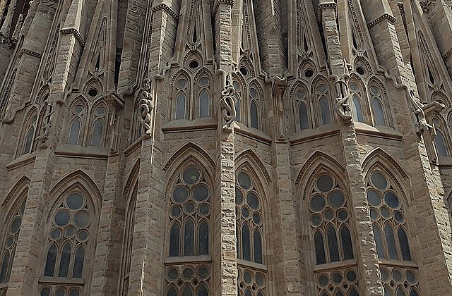
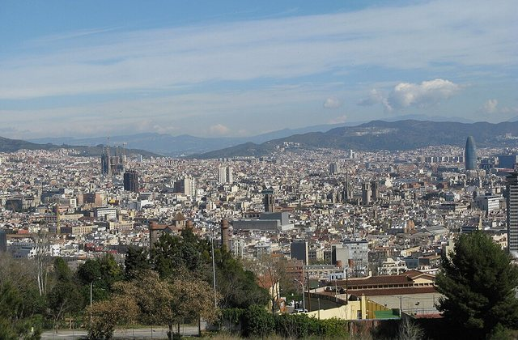
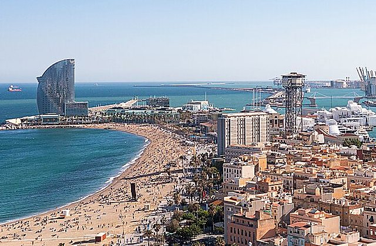
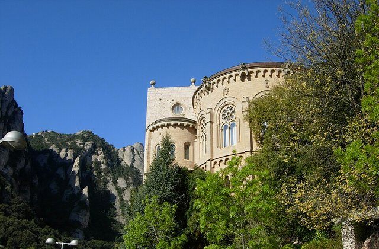
왜 중요한가숙소은(는) 오늘의 흐름에서 다음 장면으로 자연스럽게 이어지는 핵심 지점이다.
볼 포인트체크아웃·짐 점검. 대표 풍경과 공간의 분위기에 집중한다.
실전 팁혼잡하면 핵심을 보고 이동하고, 예약 장소는 15분 일찍 도착한다.
시간 관리표시된 이동시간에 환승·대기 10분을 더한다.
도보Urgell Metro Barcelona → Sant Antoni Barcelona12분 · 경로 ↗ 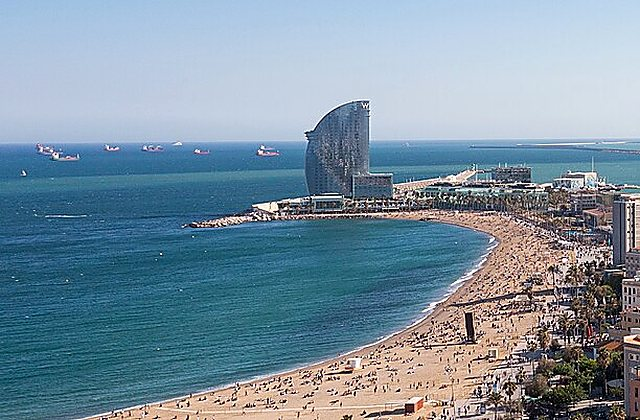
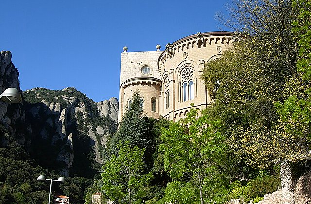
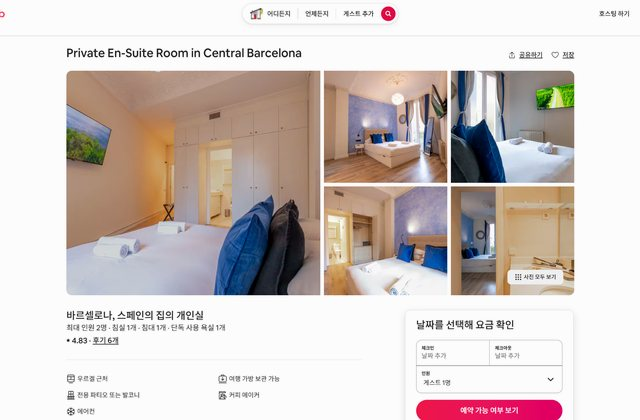
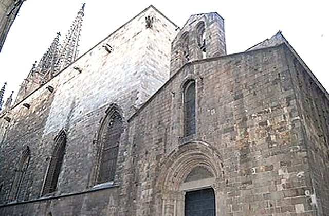
왜 중요한가Sant Antoni은(는) 오늘의 흐름에서 다음 장면으로 자연스럽게 이어지는 핵심 지점이다.
볼 포인트마지막 브런치. 대표 풍경과 공간의 분위기에 집중한다.
실전 팁혼잡하면 핵심을 보고 이동하고, 예약 장소는 15분 일찍 도착한다.
시간 관리표시된 이동시간에 환승·대기 10분을 더한다.
도보Sant Antoni Barcelona → Placa Universitat Barcelona14분 · 경로 ↗ Plaça Universitat
산책·마지막 구매
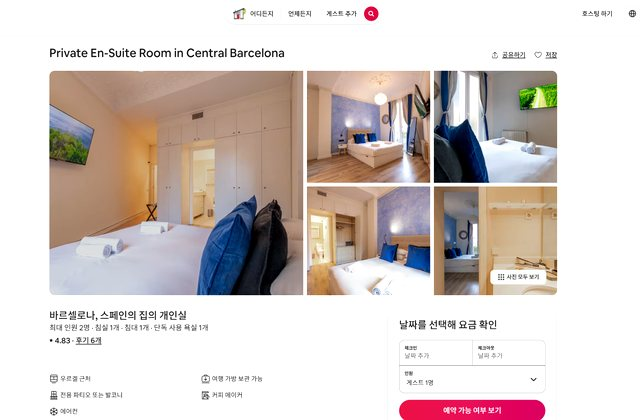
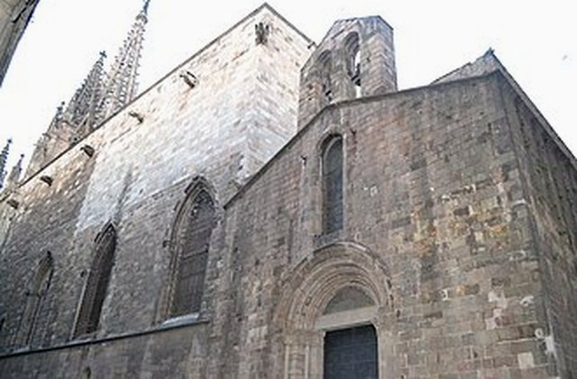
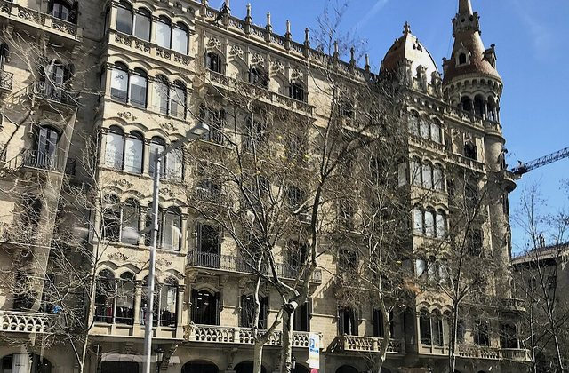
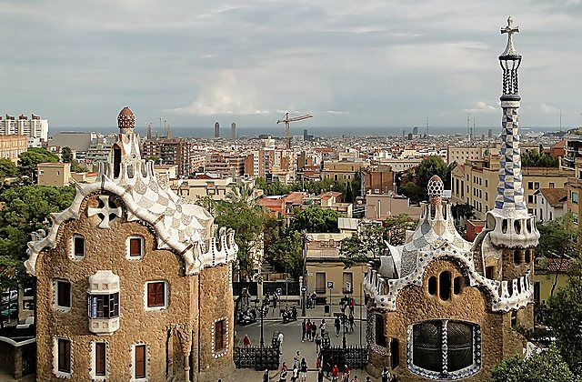
왜 중요한가Plaça Universitat은(는) 오늘의 흐름에서 다음 장면으로 자연스럽게 이어지는 핵심 지점이다.
볼 포인트산책·마지막 구매. 대표 풍경과 공간의 분위기에 집중한다.
실전 팁혼잡하면 핵심을 보고 이동하고, 예약 장소는 15분 일찍 도착한다.
시간 관리표시된 이동시간에 환승·대기 10분을 더한다.
도보Placa Universitat Barcelona → Urgell Metro Barcelona13분 · 경로 ↗ 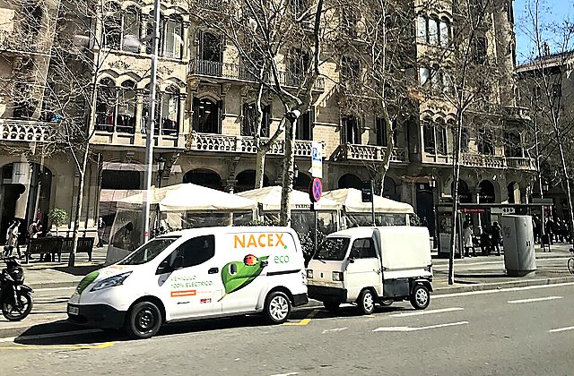
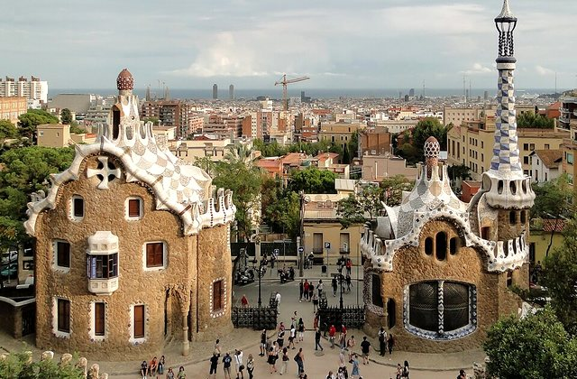
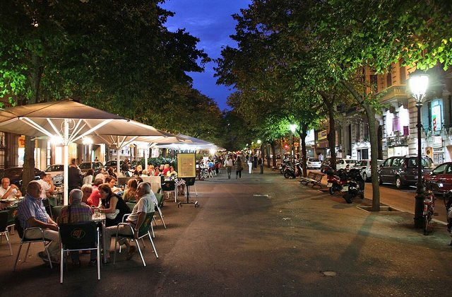
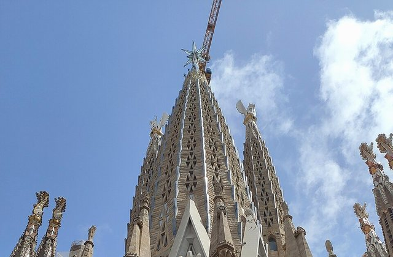
왜 중요한가숙소은(는) 오늘의 흐름에서 다음 장면으로 자연스럽게 이어지는 핵심 지점이다.
볼 포인트짐 수령. 대표 풍경과 공간의 분위기에 집중한다.
실전 팁혼잡하면 핵심을 보고 이동하고, 예약 장소는 15분 일찍 도착한다.
시간 관리표시된 이동시간에 환승·대기 10분을 더한다.
도보Urgell Metro Barcelona → Aerobus Placa Universitat10분 · 경로 ↗ 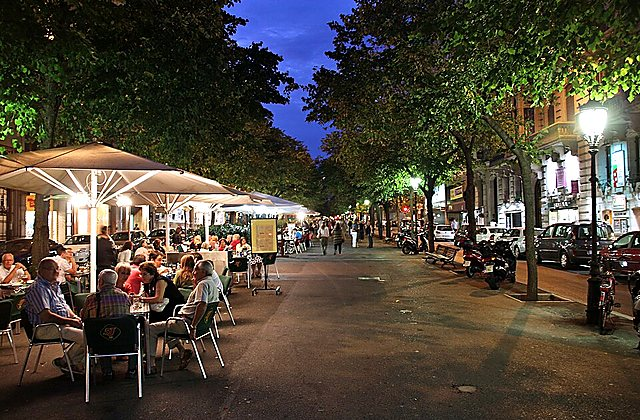
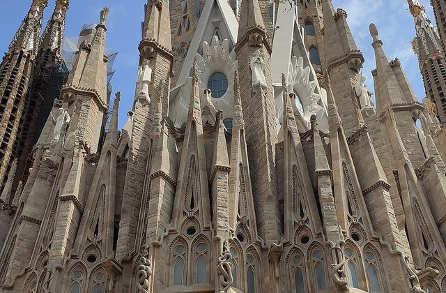
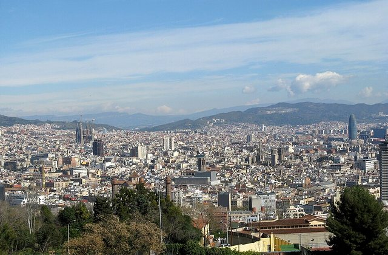
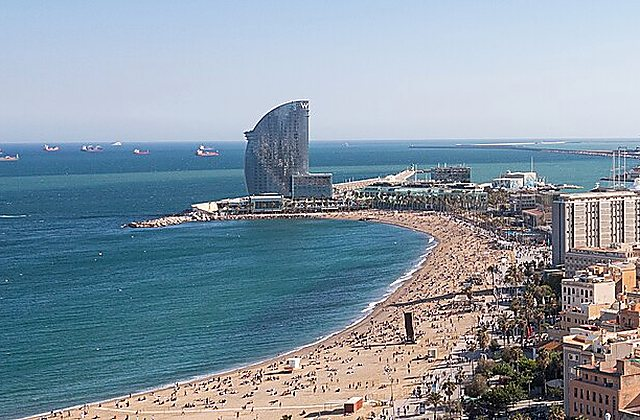
왜 중요한가Aerobús 정류장은(는) 오늘의 흐름에서 다음 장면으로 자연스럽게 이어지는 핵심 지점이다.
볼 포인트공항버스. 대표 풍경과 공간의 분위기에 집중한다.
실전 팁혼잡하면 핵심을 보고 이동하고, 예약 장소는 15분 일찍 도착한다.
시간 관리표시된 이동시간에 환승·대기 10분을 더한다.
AerobúsAerobus Placa Universitat → Barcelona El Prat Airport35분 · 경로 ↗ Barcelona Airport
체크인·택스리펀
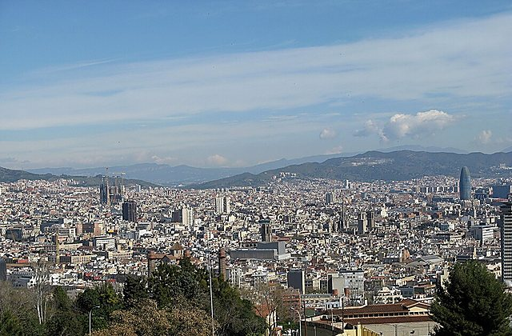
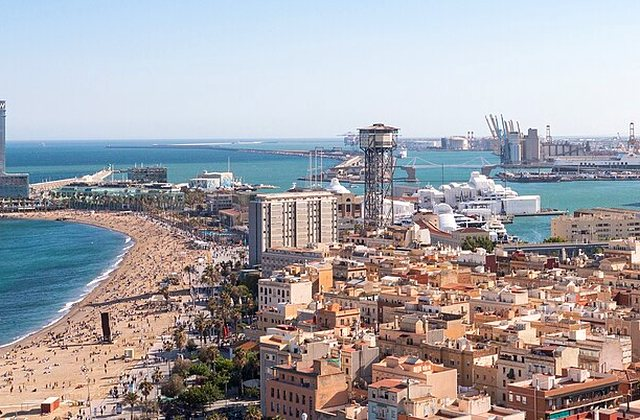
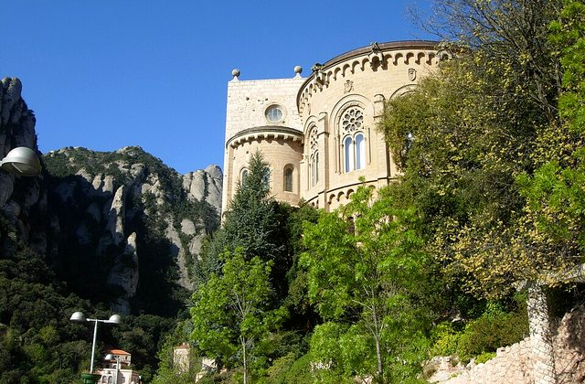
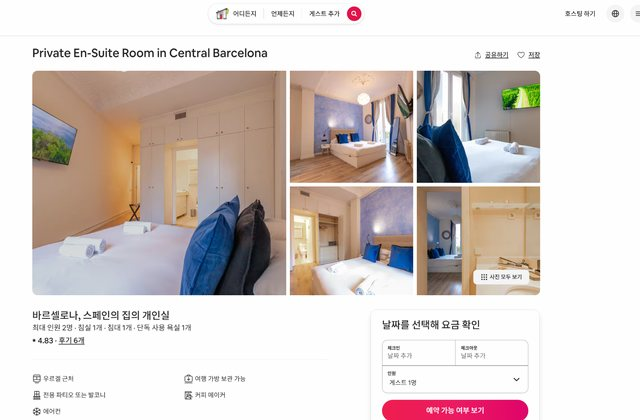
왜 중요한가Barcelona Airport은(는) 오늘의 흐름에서 다음 장면으로 자연스럽게 이어지는 핵심 지점이다.
볼 포인트체크인·택스리펀. 대표 풍경과 공간의 분위기에 집중한다.
실전 팁혼잡하면 핵심을 보고 이동하고, 예약 장소는 15분 일찍 도착한다.
시간 관리표시된 이동시간에 환승·대기 10분을 더한다.
도보Barcelona El Prat Airport → Barcelona El Prat Airport10분 · 경로 ↗ 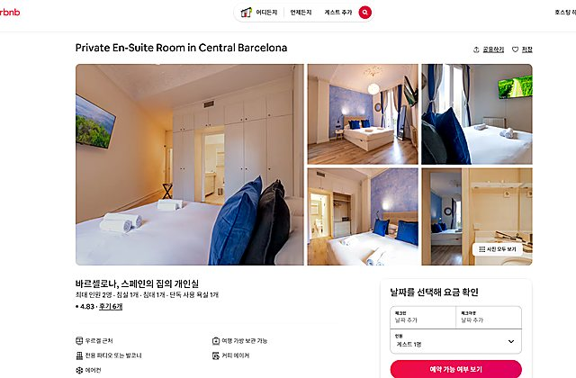
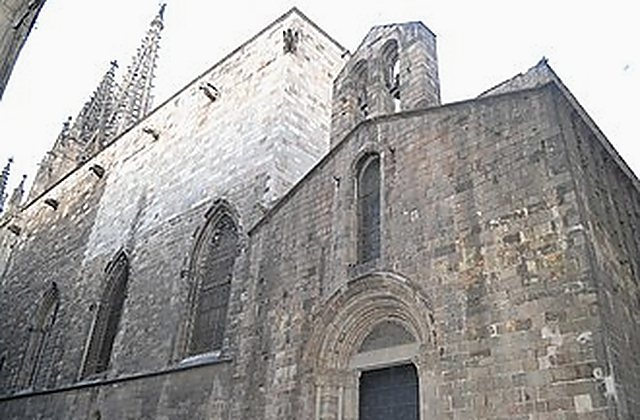

왜 중요한가CA572 Departure은(는) 오늘의 흐름에서 다음 장면으로 자연스럽게 이어지는 핵심 지점이다.
볼 포인트베이징행. 대표 풍경과 공간의 분위기에 집중한다.
실전 팁혼잡하면 핵심을 보고 이동하고, 예약 장소는 15분 일찍 도착한다.
시간 관리표시된 이동시간에 환승·대기 10분을 더한다.